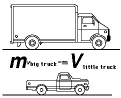
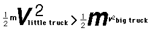

More force to stop a smaller truck?
 |
 With equal momentum, the little truck will have more kinetic energy since kinetic energy depends upon the square of the velocity. With more kinetic energy, it will take more work to stop the smaller truck. Since work is equal to average force times stopping distance, the work-energy principle implies that it will take more force to stop the smaller truck in a given distance. |
Collision concepts
| HyperPhysics***** Mechanics ***** Newton's laws | R Nave |